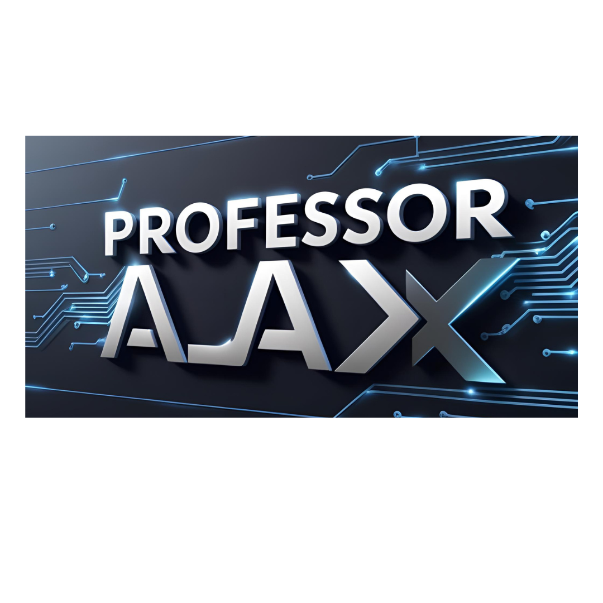
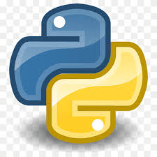

Python é uma linguagem de programação de alto nível, interpretada e de propósito geral, conhecida por
sua sintaxe clara e legível. Criada por Guido van Rossum e lançada em 1991, ela é amplamente utilizada
em áreas como desenvolvimento web, ciência de dados, automação, inteligência artificial e machine
learning. Python suporta múltiplos paradigmas de programação, incluindo orientação a objetos,
programação estruturada e funcional. Sua vasta biblioteca padrão e ecossistema de frameworks, como
Django e Flask, facilitam o desenvolvimento de aplicações complexas. Além disso, Python é uma linguagem
multiplataforma, funcionando em sistemas como Windows, macOS e Linux. Sua comunidade ativa e a
disponibilidade de recursos gratuitos contribuem para sua popularidade entre iniciantes e profissionais.
Java é uma linguagem de programação de alto nível, orientada a objetos e multiplataforma, desenvolvida
pela Sun Microsystems (atualmente Oracle) e lançada em 1995. Ela é conhecida pelo princípio "write once,
run anywhere" (escreva uma vez, execute em qualquer lugar), graças à sua máquina virtual (JVM), que
permite que o código Java seja executado em qualquer dispositivo compatível. Java é amplamente utilizada
em aplicações empresariais, desenvolvimento Android, sistemas embarcados e grandes sistemas
distribuídos. Sua sintaxe é semelhante a C e C++, mas com menos complexidade e mais recursos de
segurança. A linguagem também oferece uma vasta biblioteca padrão (Java Standard Edition) e frameworks
populares, como Spring e Hibernate. Java é uma das linguagens mais populares e consolidada no mercado,
com uma grande comunidade de desenvolvedores e suporte contínuo para evolução e inovação.
C# (pronunciado "C Sharp") é uma linguagem de programação orientada a objetos desenvolvida pela
Microsoft como parte da plataforma .NET, lançada em 2000. Criada por Anders Hejlsberg, ela combina
conceitos de C++ e Java, sendo amplamente utilizada para desenvolvimento de aplicações Windows, web (com
ASP.NET), jogos (com a Unity) e serviços em nuvem. C# é uma linguagem moderna, segura e de alto
desempenho, com suporte a recursos como genéricos, LINQ (Language Integrated Query) e programação
assíncrona. Sua sintaxe é limpa e intuitiva, facilitando o aprendizado e a produtividade. Além disso, C#
é multiplataforma, graças ao .NET Core, permitindo a criação de aplicações para Windows, Linux e macOS.
A linguagem é constantemente atualizada, com uma comunidade ativa e ampla documentação, sendo uma das
principais escolhas para desenvolvedores no ecossistema Microsoft.
R é uma linguagem de programação e ambiente de software especializado em análise estatística,
manipulação de dados e visualização gráfica. Criada por Ross Ihaka e Robert Gentleman na década de 1990,
é amplamente utilizada por estatísticos, cientistas de dados e pesquisadores para realizar análises
complexas e modelagem de dados. R é uma linguagem de código aberto, com uma sintaxe que prioriza a
expressividade para tarefas estatísticas, e possui uma vasta coleção de pacotes disponíveis no CRAN
(Comprehensive R Archive Network) para expandir suas funcionalidades. Sua capacidade de criar gráficos
de alta qualidade, como histogramas, scatterplots e heatmaps, é um dos seus pontos fortes. Além disso, R
é compatível com outras linguagens, como Python e C++, e integra-se bem com ferramentas de big data e
machine learning. Apesar de ter uma curva de aprendizado mais íngreme, sua flexibilidade e poder a
tornam essencial para profissionais que trabalham com dados.
.jpg)
.jpg)
.jpg)